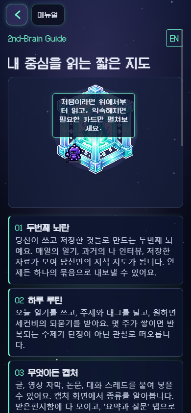
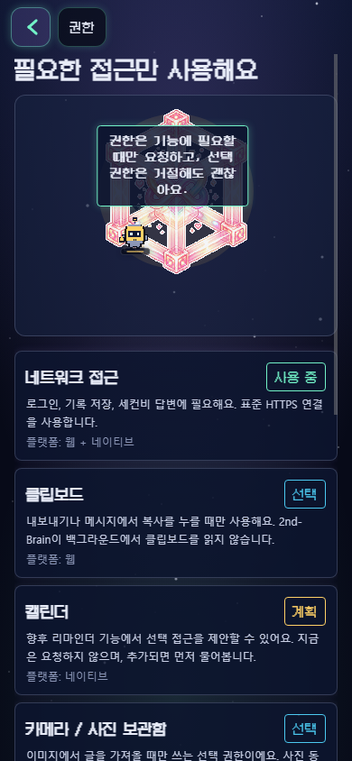

[2026-06-08 / 21:27:55 KST]
O-7 Clipping Sweep Re-Check After 43693ba
Static Result
git diff --check e0ebd6a..43693ba passed. The patch is narrow layout work: minWidth:0 on shrinking text lanes and flexShrink:0 on fixed right-side badges/labels.
Public CDP 390 Result
/manual and /permissions remain clean at true 390 CSS px. Both report innerWidth=390 and scrollWidth=390.
{
"width": 390,
"height": 844,
"deviceScaleFactor": 1,
"mobile": true
}
Verification Limit
/secondb and /wiki redirect to /sign-in on a clean unauthenticated profile, so the actual touched authenticated surfaces still need safe account, emulator, or AG device proof.
Evidence

